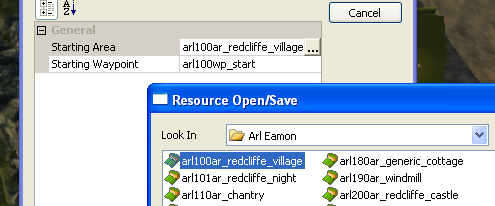
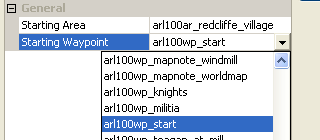

Exporting and running a module
In order export your edits and changes for a level to the game there are several steps involved. When working in a collaborative environment you should generally not check in resources until you have exported and tested them in game.
Contents
Setting the starting area
The starting area and starting waypoint within that area are a property of the module. To set this property you'll need to open the object inspector for the module itself.
To get there, select the "Manage Modules" command from the file menu:
{kind=link}
This will bring up a list of all the available modules:
{kind=link}
Select the one you want to set the start area for and click the "Properties" button. This will open the object inspector and allow you to set the "Starting Area" and "Starting Waypoint" properties.
{kind=link}
Overriding the starting area in a test export
If you're exporting an area just to give it a test run it can be convenient to be able to override the module's start area on an export-by-export basis.
Save the area you are working on and choose tools from the menu:
{kind=link}
Navigate down to the “Export options” choice:
{kind=link}
You will see a window that will define the starting area and the starting waypoints for the export. Choose the corresponding starting area and waypoint by clicking on the fields and making your choice.
{kind=link}

{kind=link}

Exporting the module
When this is completed, close the Export options window. In the ALL view of the resource palette, select all of the resources for your module (only). Right-click then Export without dependent resources.
{kind=link}
This will export your module to the game. Once the export has completed you should be able to start a "New Game" (if editing the main campaign) or select your module under "Other Campaigns" (for stand-alone campaigns). You should start in the level that you have exported at the waypoint that you have set as your starting point.
HINT : If you set Tools > Options > Auto-Export on Save > Export without dependent resources, every resource will be exported automatically when you save it. In which case, in theory, you shouldn't need to export everything again before running the module.
Points to watch out for:
- Forgetting to export something is a major cause of mysterious problems in game, so be sure to select everything you've modified.
- Changes to the Export Options do not take effect until something is exported.
- It's always wise to export areas before testing. Certain object properties (e.g. tag) can be overriden for area instances. If you change the resource template then export it, the change will NOT take effect in game until the area is exported, even if the area is using the default values (this might be a bug).
- There's also a good case for exporting scripts every time. This recompiles them all, ensuring that any changes to custom includes are consistent.
- If you create a resource without saving it, it will not export automatically, even if Auto-Export on Save is set. This can happen if, for example, you create resources in a Builder-to-Builder Load, but never edit them.
Export Options
Export without dependent resource: This is almost invariably the best option. It only exports the currently selected resource(s). It gives complete control over what is exported. All other options export core resources unnecessarily, making the player package bigger than it needs to be.
Export with dependent resources: This will export the currently selected resource, as well as any other resources that it depends upon. For instance, if you have created an area with a creature in it, this option will export the area, the creature, the creature's inventory, the scripts, etc. It would then grab any dependencies for the creature, inventory, or scripts and continue until it exhausted all of their dependencies. Doing this is a good way to make sure you get all of the needed pieces for any particular resource, but it can also quickly multiply to the point where it is picking up half of the module.
Export all resources of type: This will export every resource of the same type as that which is currently selected in the palette. For instance, if you select a creature and choose this method, it will export all creatures in the module.
Full export: This option exports every resource associated with the module. It is the most comprehensive, and takes the longest to run.
Locations where resources are exported to/read from
See Source directory priorities for a list of the directories that resources can be stored for the game and toolset to use.
| Language: | English • русский |
|---|